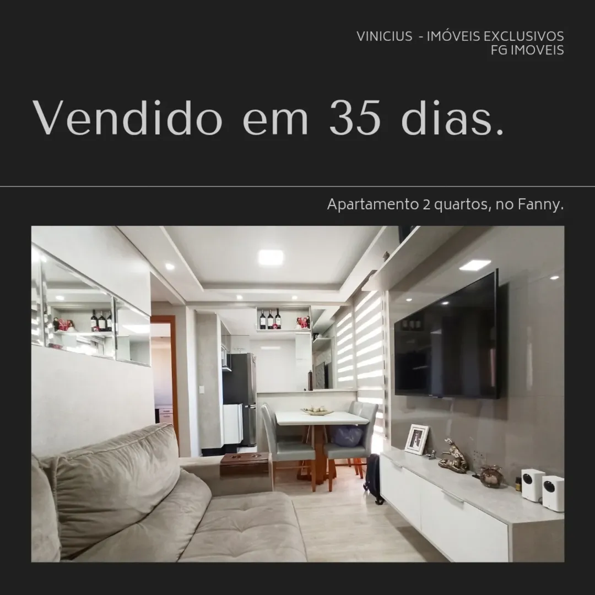
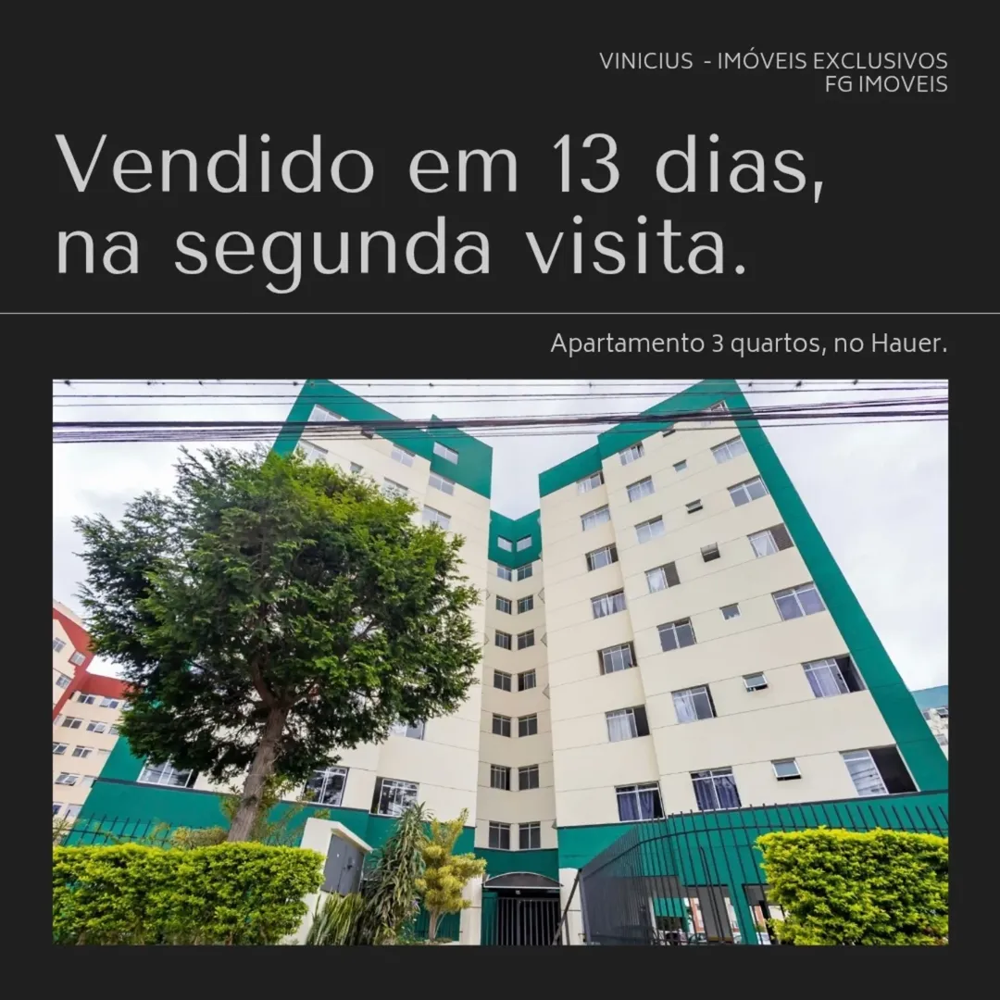
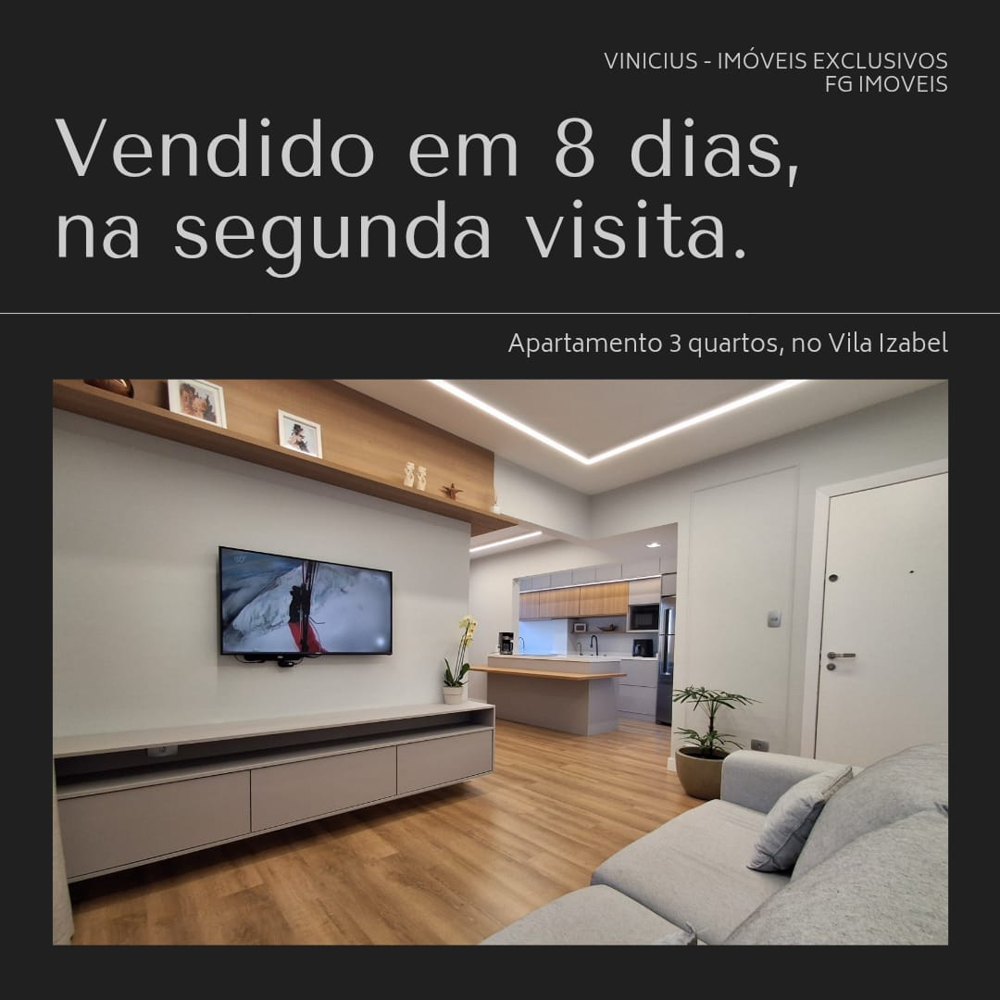

📊 Veja meus resultados recentes
  📌 Esses resultados são fruto de uma estratégia profissional de divulgação e acompanhamento exclusivo com cada cliente.
🔎 Quer acompanhar mais resultados e bastidores do meu trabalho?

➡️ Siga no Instagram
ⓠDúvidas Frequentes
-
Já trabalhei com várias imobiliárias e não tive resultado. Por que seria diferente agora?
✅ Trabalho investindo mais tempo, atenção e verba no seu imóvel. Seu imóvel será tratado como prioridade.
-
Já anunciei meu imóvel e ninguém me deu retorno. Isso vai acontecer de novo?
⌠Comigo, não. Faço acompanhamento ativo com interessados, com respostas rápidas e direcionadas. Meu foco é vender, não apenas "anunciar".
-
Posso confiar em deixar meu imóvel com você?
Sim. Compromisso, transparência e foco no resultado real. Ofereço atendimento exclusivo e estratégias personalizadas.
-
Como confiar na avaliação de um corretor?
Faço uma avaliação realista e técnica, com base em dados atualizados do mercado. 📈 Preço certo + estratégia certa = venda com resultado.
-
Quanto tempo dura o contrato?
Contrato de 120 dias. Caso não venda nesse perÃodo, você está livre para escolher outro profissional.
-
Onde meu imóvel será divulgado?
- 🔸 Portais imobiliários
- 🔸 Anúncios pagos nas redes sociais
- 🔸 Clientes de carteira e corretores parceiros
- 🔸 Fotos profissionais e vÃdeos de apresentação